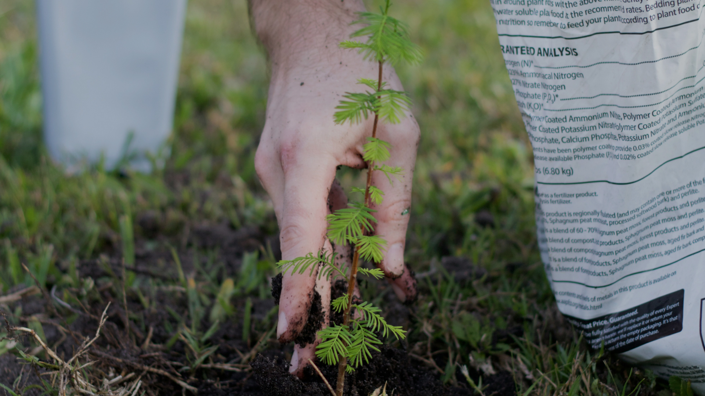
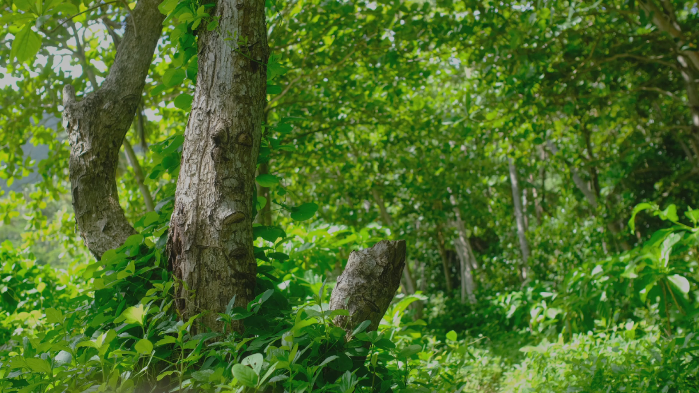

본문바로가기
주메뉴바로가기
생명의숲
메뉴열기
소개
생명의숲은!
함께하는이들
재정공개
공지사항
찾아오시는길
활동
활동소개
활동이야기
그린짐 이야기
아름다운 숲
참여와후원
후원이야기
후원안내
기업후원
참여프로그램
자원활동안내
자료실
정기간행물
문서자료실
미디어자료실
나의후원
모바일언어선택
메뉴닫기
검색
pc언어선택
팝업
누구나 일상에서 건강한 숲을 누리도록
도시 속 나무심기를 위한
#같이가치 #매달기부

기념하고 싶은날! 서울 곳곳에
나무 한 그루 심어보는 건 어떠세요?
서울 마이트리 내 나무 갖기

시민의 힘으로 나무를 심고
숲을 가꾸고 보전하는 시민단체입니다
모두가 누리는 5분 거리의 숲
tree
introduce
story
main
나무심기
숲 활동
활동이야기